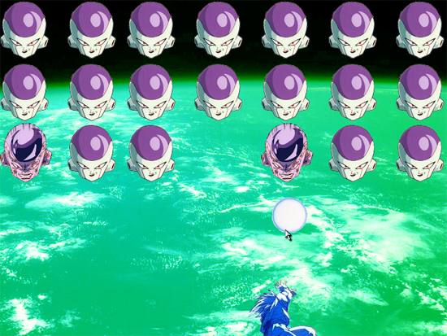

PolyBomber
Posted by Mathew on July 13th, 2008

Three Dimensional Turret Shooter
Downloads:
Team Targaryen:
- Programming
Platform:
Made using HGE for a windows framework, OpenGL for a graphics system.
Notes:
Made for CSE 472, Computer Graphics, as a final project, this isn't so much a game as a test of whether or not we could use a 2d game framework (HGE) to make a 3D OpenGL based project, and in the process learn a little about 3D game programming. Originally we meant to take it a bit further, but time is the currency of student life, and during our later years of college we proved to be slightly more poor than we had at first thought.
Posted in Academic, Game
Haven
Posted by Mathew on May 1st, 2008

Zombie Apocalypse Tower Defense and Shooter
Downloads:
Team Smoke Monster:
- Design
- Programming
- Art:
- Sound
Platform:
Made using Torque Game Builder v1.72
Notes:
This was made as a final project for TC 445, Introduction to Game Design. While we did not take first place, I still felt we put forth a good effort, and our repeat artists Marie Lazar put in an even better performance than our last game (see Galactalvania).
Posted in Academic, Game
Galactalvania
Posted by Mathew on February 28th, 2008

Side Scrolling Action Featuring Space Vampires
Downloads:
Team Arcadia:
- Level Design
- Programming
- Art:
Platform:
Made using Torque Game Builder v1.71
Notes:
This was made as a second project in TC 445, Introduction to Game Design. In this assignment we had to choose either a shooter or a platformer (we chose the later) to make, and we had several weeks to do so. In the end our game ended up being voted best, and I'd have to lay the credit at the feet of our artist, Marie Lazar.
Posted in Academic, Game
Breakout Z
Posted by Mathew on January 26th, 2008

Breakout Clone
Downloads:
Team:
Made as a solo project
Platform:
Made using Torque Game Builder v1.6
Notes:
This game was made as a first project in TC 445, Introduction to Game Design, and was my first Torque project. The objective of the assignment was to modify some basic breakout game, I modified mine by replacing the graphics, adding out of game menus, and providing custom music which I made using Mario Paint Composer.
Posted in Academic, Game
Colbert's Magical Punching WHAT!? Adventure
Posted by Mathew on January 20th, 2008

Crazy Boxing Adventure
Downloads:
Colbert's Magical Punching WHAT!? Adventure
Team Wombat:
- Design
- Everyone below
- Programming
- Art:
Platform:
Made using C# with the DirectX managed layer
Notes:
This was the product of a 48 hour Game Jam held at the University of Michigan, and while the total number of entries escape me (perhaps around 13?) our entry took fifth. The theme (if not already obvious) was simply Steven Colbert, and while this seemed odd at first it produced some surprisingly fun results. Some issues still plague the application itself, and I personally think our design was just too ambitious for 48 hours, but overall it was a fun experience. On a side note the first place team was also from Michigan State University.